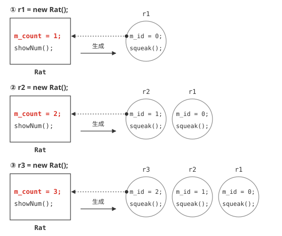
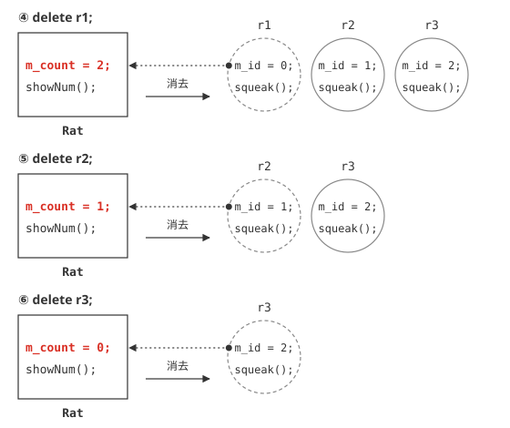

静的メンバ
静的メンバとインスタンスメンバ
今まで説明してきたメンバ変数、およびメンバ関数は、すべてインスタンスを生成することによって初めて利用可能なものでした。しかし、こういった変数や関数の中には、必ずしもインスタンスを生成しなくてもいいような処理もあるはずです。では、このような処理を行いたい場合、どうすればよいのでしょうか？
その時便利なのが、静的メンバと呼ばれるものです。静的メンバは、インスタンスを生成することなく利用できるメンバ変数、およびメンバ関数を意味します。これに対し、従来のようにインスタンスの生成を必要とするメンバのことを、インスタンスメンバと呼びます。ここでは、静的メンバの作り方と、その利用方法について説明します。
静的メンバのサンプル
メンバ変数、およびメンバ関数は、生成したインスタンスに依存し、同じ名前でもインスタンスが異なれば違うものであることはすでに説明しました。それに対し、ここから説明する静的メンバは、クラスにただ一つしかありません。まずは、以下のサンプルを実行してみてください。
#ifndef RAT_H
#define RAT_H
class Rat{
public:
// コンストラクタ
Rat();
// デストラクタ
~Rat();
// ネズミの数の出力
static void showNum();
// ネズミが鳴く
void squeak();
private:
// ネズミの番号
int m_id;
// ネズミの数
static int m_count;
};
#endif /* RAT_H */
#include "rat.h"
#include <iostream>
using namespace std;
// ネズミの数の初期値を0に設定
int Rat::m_count = 0;
// コンストラクタ
Rat::Rat() : m_id(0){
m_id = m_count; // ネズミの数を、IDとする。
m_count++; // ネズミの数を一つ増やす
}
// デストラクタ
Rat::~Rat() {
cout << "ネズミ:" << m_id << "消去" << endl;
m_count--; // ネズミの数を一つ減らす
}
// ネズミの数の出力
void Rat::showNum()
{
cout << "現在のネズミの数は、" << m_count << " 匹です。" << endl;
}
// ネズミが鳴く
void Rat::squeak()
{
cout << m_id << ":" << "チューチュー" << endl;
}
#include "rat.h"
#include <iostream>
using namespace std;
int main(){
Rat *r1,*r2,*r3;
r1 = new Rat(); // 一匹目のネズミ生成
r1->squeak();
Rat::showNum(); // ネズミの数を表示
r2 = new Rat(); // 二匹目のネズミ生成
r3 = new Rat(); // 三匹目のネズミ生成
r2->squeak();
r3->squeak();
delete r1; // 一匹目のネズミ消去
delete r2; // 二匹目のネズミ消去
Rat::showNum(); // ネズミの数を表示
delete r3; // 三匹目のネズミ消去
Rat::showNum(); // ネズミの数を表示
return 0;
}
現在のネズミの数は、1 匹です。
1:チューチュー
2:チューチュー
ネズミ:0消去
ネズミ:1消去
現在のネズミの数は、1 匹です。
ネズミ:2消去
現在のネズミの数は、0 匹です。
プログラムをみるとわかるとおり、rat.hの中に、staticがついたメンバ変数とメンバ関数があります。これらがそれぞれ、静的メンバ変数と静的メンバ関数になります。
静的メンバ変数
では、まずは静的メンバ変数について説明していきましょう。静的メンバ変数の定義は、以下のようになります。
このような定義は、ヘッダファイルで行います。それに対し、初期値の設定は、以下のように行います。
通常、メンバ変数の初期値の設定は、ソースファイルで行われるのが一般的です。そのため、list5-1においても
となり、初期値の設定は、
となっています。これにより、プログラム起動時にクラスRatのメンバ変数は、初期値0として使用可能になります。なお、静的メンバ変数は、インスタンスを生成しなくても呼び出すことができます。
静的メンバ関数
続いて、静的メンバ関数ですが、こちらもインスタンスを生成する前から存在します。そのため、インスタンスを生成しなくても、呼び出すことが可能です。静的メンバ関数の定義は、ヘッダファイルにある、メンバ関数の定義の先頭にstaticをつけるだけです。先頭にstaticがつくだけで、定義の方法は一般のメンバ関数と何ら変わりません。
このプログラムでは、rat.hの11行目で以下のようにして静的メンバ関数を定義しています。
先頭にstaticがつくだけで、他の部分は特に変わりません。ただし呼び出し時は、main.cppで記述されているように、以下のようにして呼び出します。
これは、たとえば、「r1->showNum()」のように、インスタンスから呼び出してもかまわないのですが、静的メンバの性質上、インスタンスを生成しなくても利用できることから、このような使い方をするのが一般的です。
静的メンバの利用
なお、関数の実装方法は通常のメンバ関数と同じなので、ここでは省略します。ただ、注意しなくてはならないのは、静的なメンバ関数が利用できるメンバ変数は、静的メンバ変数に限られるということです。
これは、通常のメンバ変数（インスタンス変数）は、インスタンスを生成しないと利用できないからで、インスタンスを生成しなくても呼び出せる静的なメンバ関数からは利用できないのは、そのためです。同様の理由で、静的メンバ関数から、通常のメンバ関数は呼び出せません。
ただし、その逆に通常のメンバ関数から、静的メンバ変数を利用したり、静的メンバ関数を呼び出すことは可能です。この規則を表にまとめると、以下のようになります。（表5-1.）
| 静的メンバ変数 | 静的メンバ関数 | インスタンスメンバ変数 | インスタンスメンバ関数 | |
|---|---|---|---|---|
| 静的メンバ関数 | 利用可 | 利用可 | 利用不可 | 利用不可 |
| インスタンスメンバ関数 | 利用可 | 利用可 | 利用可 | 利用可 |
プログラムの仕組み
では、以上を踏まえてプログラムの仕組みを説明していきましょう。Ratクラスのインスタンスは、main.cppの8行目、11行目、12行目で生成されていますが、そのたびに、コンストラクタ内（rat.cpp内の12行目）で、count++が実行されます。この変数は静的なメンバ変数ですから、初期値0からインクリメントされていきます。インスタンスの数がいくら増えても、クラスメンバには影響がありません。そのため、m_countがインクリメントされて、Rat::showNum() メソッドを実行すると、現在生成されているRatクラスのインスタンスの数が取得できるのです。(図5-1.参照)

図5-1：Ratクラスと静的メンバの関係性（newしている段階で）
逆に、デストラクタ内（rat.cppの17行目）で、m_count--;されるので、そのたびに値は減っていきます。(図5-2.参照)

図5-2：Ratクラスと静的メンバの関係性（deleteしている段階で）
また、インスタンスメンバとは異なり、クラスメンバは、インスタンスを生成しなくても利用できることから、初期状態、もしくは、すべてのインスタンスが消去された状況では、m_countの値は0になることから、showNum()メソッドの実行結果は、0になります。